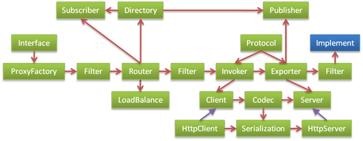
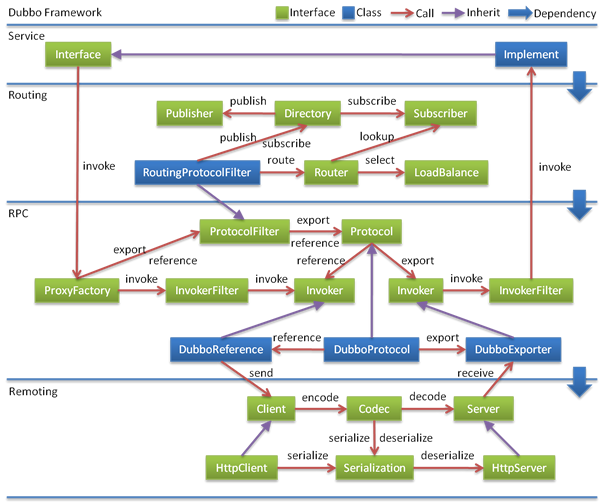

Extension points to reconstruct
http://javatar.iteye.com/blog/1041832
With the promotion of service, the website of Dubbo service framework requirements gradually increase, Dubbo existing developers can implement demand is limited, many requirements have been delay, and site classmates also want to participate, combined with field, so the platform will be open to internal part of the project, let everyone together to implement, Dubbo as one of the pilot project.
Now that want to open it, about to take some extension point Dubbo, let participants black box extend as far as possible, rather than a white box to modify the code, or branch, quality, merger, the conflict will be hard to manage.
First look at the Dubbo existing design：

There though some extension interface, but not very good collaboration, and loading and configuration of extension points are not unified handling, so face it under the refactoring.
Step 1, the core plug-in, equal treatment to the third party
Now that want to expand, extension point loading mode, the first thing to unification, micro core + plug-in, can achieve the principle of OCP is train of thought.
Made up of a plugin lifecycle management container, core, core does not include any functions, this will ensure that all functions can be replaced, and framework, the authors can achieve the function of the extension must also can do it, so as to guarantee the equal treatment to a third party, so, the function of the framework itself also want to use the plug-in way, cannot have any hard coded.
Micro core usually adopt the Factory, the IoC, the OSGi plugin lifecycle management.Consider the applicable Dubbo, strong don't want to rely on the Spring IoC container.The IoC container that you made a small also feel a little too much design, so intend to use the most simple way of Factory management plug-in.
Finally decided to adopt the JDK standard SPI extension mechanism, see: Java. Util. The ServiceLoader, namely extension in the jar package meta-inf/services / directory placed with interface of text files, with the same content for interface implementation class name, multiple separate implementation class name with a newline.Need to expand Dubbo agreement, for example, simply by XXX. Placed in a jar file: meta-inf/services/com. Alibaba. Dubbo. RPC. Protocol, contents for com. Alibaba. XXX. XxxProtocol.Dubbo by ServiceLoader scanning to all Protocol implementation.
All plug-in and agreed, must be marked with: @ the Extension (" name "), as the identity of the name, after loading is used to configure option.
Step 2 each extension point encapsulate a change factor, only to maximize reuse
Each extension point implementers, usually only care about one thing, now the extension points, is not entirely separate.Such as: Failover, the Route, LoadBalance, Directory not completely separate, all written by RoutingInvokerGroup died.
Again, for example, protocol extension, the extension may just want to replace the serialization way, or just replace transmission mode, and Remoting and Http can also reuse serialization, etc.In this way, the need for transport, the client, the server implementation, protocol parsing, data serialization, allow different extension point.
After break up, the design is as follows:

Step 3, the entire pipeline design, logic framework itself, are implemented using cross section intercept
Now a lot of logic, are placed in the base class implementation, then by the method of template back to the realization of the tone categories, including: local, mock, generic, echo, token, accesslog, monitor, count, limit, etc., can use the Filter to realize all split, each function is called a ring on the chain.Such as: (the base class template method)
public abstract AbstractInvoker implements Invoker {
public Result invoke(Invocation inv) throws RpcException {
// Pseudo code
active ++;
if (active > max)
wait();
doInvoke(inv);
active --;
notify();
}
protected abstract Result doInvoke(Invocation inv) throws RpcException
}
To: (chain filter)
public abstract LimitFilter implements Filter {
public Result invoke(Invoker chain, Invocation inv) throws RpcException {
// Pseudo code
active ++;
if (active > max)
wait();
chain.invoke(inv);
active --;
notify();
}
}
Step 4, a minimum concept, consistent conceptual model
Keep the concept of as little as possible, help to understand, for open systems is particularly important.In addition, the interface can use a consistent conceptual model, can guide each other, and reduce the model transformation,
For example, Invoker method signature as follows:
Result invoke(Invocation invocation) throws RpcException;
The Exporter method signature as follows:
Object invoke(Method method, Object[] args) throws Throwable;
But they are the same, only is a on the client side, one on the server side, different model classes are applied.
For example, the URL string, parse and assembled, not a URL model classes, and the Parameters of the URL, but sometimes the Map, and sometimes the Parameters class wrapping,
export(String url)
createExporter(String host, int port, Parameters params);
Use consistent model:
export(URL url)
createExporter(URL url);
For example, the existing: Invoker, Exporter, InvocationHandler, FilterChainAre actually invoke behavior at different stages, can abstract away completely, unified for the Invoker, reduce the concept.
Step 5, hierarchical, modular extensions, rather than generic type extension
Why see:expansibility。
Generalization expansion refers to: the extension point gradually abstraction, take all functions, sets and new function is always set in and expand the function of the old concept.
Combined extension refers to: the extension points orthogonal decomposition, all functions of overlap, new function is always based on the old function implementation.
The above design, unconsciously will Dubbo existing function as the core functionality.Above contains the concept of Dubbo existing RPC all functions, including: the Proxy, the Router, Failover, LoadBalance, Subscriber, Publisher, Invoker, Exporter, Filter, etc., But these are the core?RPC can Run, kicked off what?And what is not kick off?Based on this consideration, the RPC can be broken down into two levels, Protocol and Invoker is the core of RPC.Other, including the Router, Failover, Loadbalance, Subscriber, the Publisher is the core, but the Routing.Therefore, the Routing as an extension of the Rpc core, design is as follows:

Step 6, and networking
After finishing, the design is as follows:
